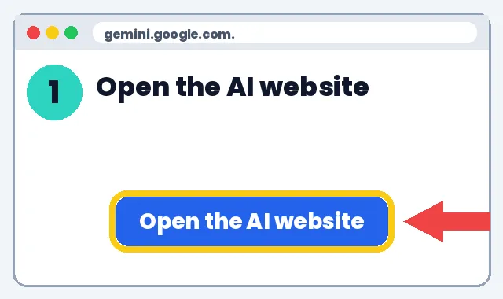
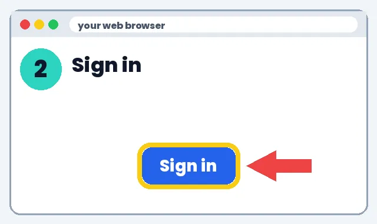
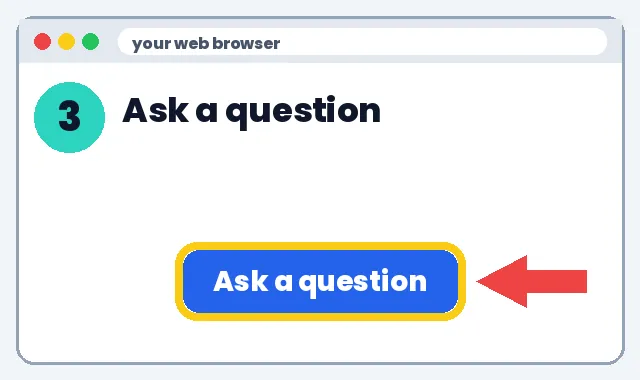
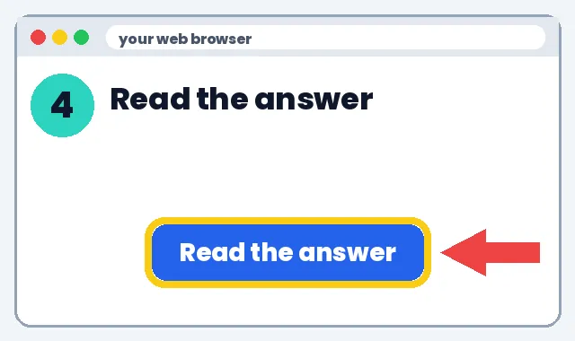
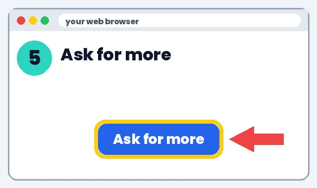

🤖 How to Use AI for the First Time
Talk to AI for the first time. We'll show you every click.
1️⃣ What it can do
2️⃣ How to make it
👉 Show me the steps
Click the top bar. Type gemini.google.com. Press Enter.

Click Sign in. Use your Gmail account.

Click the box. Paste this. Press Enter.

Wait a few seconds. Read what it wrote.

Paste this. Press Enter.

📝 Full written steps (text only)
- Open the website: Type gemini.google.com in the top bar. Press Enter.
- Sign in: Click Sign in. Use your Google (Gmail) account.
- Type a question: Click the box that says Ask Gemini. Type: Give me 3 fun facts about whales.
- Press Enter: Wait a few seconds. Read the answer.
- Ask for more: Type: Make it simpler for a 3rd grader. Press Enter.
🛡️ Safety tip: Use your own adult account. Never type a child's or student's full name, school, address, grades or photos into an AI tool. Check each tool's age rule before anyone signs up.
3️⃣ What to do next
Pick one link below and try it this week. Start small: one tool, one lesson, 10 minutes.
Learn more
🛡️ Safety tip: Use your own adult account. Never type a child's or student's full name, school, address, grades or photos into an AI tool. Check each tool's age rule before anyone signs up.
📚 How AI actually works (in plain English)
No tech experience needed. We'll show you every click.
Learn more
What a chatbot is
1️⃣ What it can do
- A chatbot (Gemini, ChatGPT, Claude, Copilot) predicts helpful words based on patterns in huge amounts of text.
- It is great at drafting, summarizing, explaining and brainstorming.
- It is not a search engine you can trust blindly. It can sound sure and still be wrong. This is called a “hallucination.”
2️⃣ How to make it
- Open your web browser (Chrome, Safari or Edge). Click the address bar at the top, type gemini.google.com and press Enter.
- Click Sign in (top right) and use your Google account. A school account works if your district allows Gemini.
- Click the box that says Ask Gemini. Click 📋 Copy this below, then click the box and press Ctrl+V (Mac: Cmd+V). Press Enter.
- Now ask the same question again in a new chat (click New chat, top left). Notice the answer changes: that's normal.
- Read the answer. AI can be wrong, so check at least one fact in a book or trusted website before you use it.
3️⃣ What to do next
Writing a good prompt (the 4-part recipe)
1️⃣ What it can do
- Better instructions = better answers.
- Saves editing time.
- Works in every AI tool.
2️⃣ How to make it
- Role: tell it who to be (“You are a grade 3 teacher”).
- Task: say exactly what you want (“Write 5 spelling sentences”).
- Details: grade, length, tone, format (“under 10 words each, a list”).
- Check: ask it to double-check (“Add an answer key. Flag anything you're unsure of.”).
- Paste, press Enter, then refine with follow-ups.
3️⃣ What to do next
Privacy and age rules
1️⃣ What it can do
- Keeps children safe.
- Keeps you within the law (FERPA, COPPA in the US).
2️⃣ How to make it
- Never paste private student information.
- Check age rules: ChatGPT and Gemini are 13+ (younger only through approved school accounts or with a parent).
- Look up a tool on Common Sense AI ratings before using it with kids.
- Ask your school's IT team which tools are approved.
3️⃣ What to do next
💰 Save money: discounts
- Apple Education pricing: Education prices on Macs and iPads
- Microsoft 365 for education: Free web Office apps with an eligible school email
- Google Workspace for Education Fundamentals: Free for qualifying schools
- Canva for Education: Free for eligible K-12 teachers
- DonorsChoose: Ask donors to fund classroom projects
See all deals for teachers & parents
Deals change, check the site. No affiliate links: we earn nothing from these.